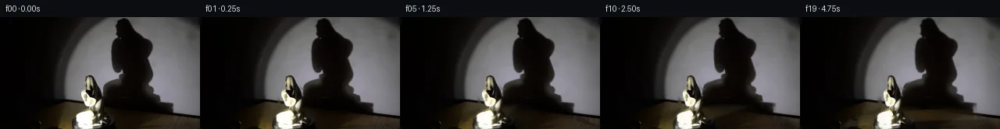
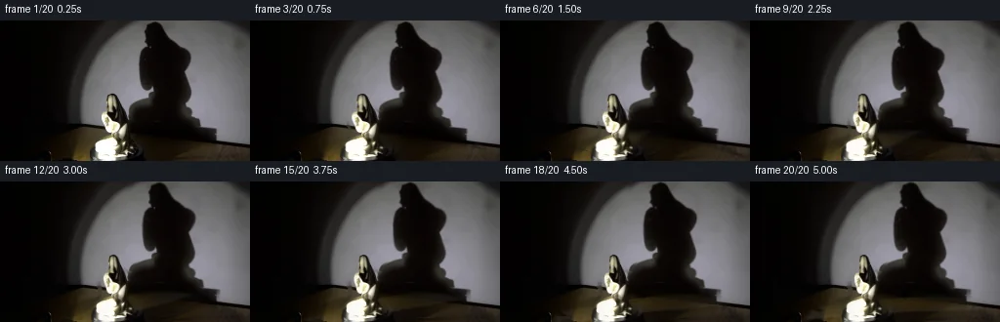
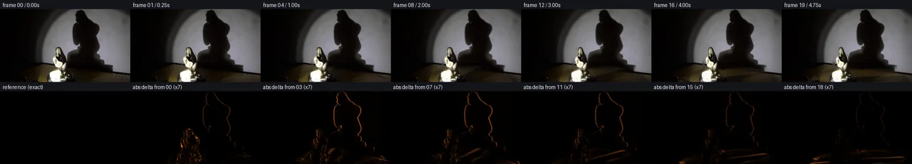

V0 · 初版 · 最终提交
![]()
Observable Generation Trace
把最终像素视频、Harness 冻结的每轮候选、真实工具事件和 Agent 自述放在同一页。可观测证据与模型自述分开标记，避免把“模型说它检查过”误当成真实工具调用。
![首帧]()
Static locked-off single-shot with fixed frame throughout filmed with constant framerate in real-time. The scene shows a realistic scientific demonstration. The scene only contains the described setup and actions. The small porcelain statue sits on the black, clockwise-rotating platform, and the spotlight points toward the porcelain statue. The small porcelain statue rotates clockwise on the black platform while the spotlight casts a large shadow on the wall behind it.
首帧显示在左侧播放器初始画面。Track 权限、隔离和 tensor 一致性来自 run manifest，而不是 METHOD.md。
默认勾选初版和最终版；可选其他版本一起同步播放。仅检查图更新的连续重复快照已合并，回退旧视频仍保留为一次修订。
Observable events
来源：events.jsonl + run manifest
此 Track 禁止读取输出图片。逐轮预览由外部 Harness 自动冻结，只用于事后审计，生成 Agent 当时看不到这些页面。
Frozen candidates
每张图来自该 round 的真实 00 / 01 / 05 / 10 / 19 帧

pixels a4365d2458110800 · code ba9554f8e6eeedef
--- previous/generate.py +++ current/generate.py @@ -0,0 +1,238 @@ +#!/usr/bin/env python3 +"""Generate a five-second pixel-domain continuation of the supplied frame. + +The implementation intentionally uses only the local first frame. It separates +the porcelain with a hand-measured silhouette, reconstructs the small occluded +area, and uses analytic inverse warps for the turntable, statue, and shadow. +""" + +from pathlib import Path + +import cv2 +import numpy as np +from PIL import Image, ImageDraw, ImageFont + +import artifact_io + + +ROOT = Path(__file__).resolve().parent +H, W = 144, 256 + + +def smoothstep(edge0, edge1, value): + value = np.clip((value - edge0) / (edge1 - edge0), 0.0, 1.0) + return value * value * (3.0 - 2.0 * value) + + +def measured_statue_mask(): + """Return a soft mask following the measured porcelain silhouette.""" + # The outline is deliberately conservative. Deep self-shadow belongs to + # the porcelain and is retained even where it resembles the cast shadow. + points = np.array( + [ + [110, 74], [117, 75], [121, 78], [122, 84], [126, 87], + [127, 92], [132, 94], [134, 101], [132, 107], [131, 114], + [130, 119], [133, 124], [137, 130], [136, 135], [132, 138], + [132, 143], [92, 143], [91, 139], [93, 134], [94, 128], + [97, 123], [101, 120], [103, 116], [103, 109], [101, 105], + [100, 99], [102, 94], [106, 91], [107, 85], [106, 80], + ], + np.int32, + ) + hard = np.zeros((H, W), np.uint8) + cv2.fillPoly(hard, [points], 255) + # A narrow feather preserves the crisp small-object detail while avoiding + # cut-out seams after subpixel remapping. + soft = cv2.GaussianBlur(hard.astype(np.float32) / 255.0, (0, 0), 0.72) + return hard, np.clip(soft, 0.0, 1.0) + + +def reconstruct_background(source, hard_mask): + """Reconstruct only the pixels hidden behind the measured porcelain.""" + expanded = cv2.dilate(hard_mask, np.ones((5, 5), np.uint8), iterations=1) + telea = cv2.inpaint(source, expanded, 7, cv2.INPAINT_TELEA) + + # The inpainting is made more consistent with the very smooth wall by a + # local edge-aware blur. The lower platform is left textured. + wall_blur = cv2.bilateralFilter(telea, 9, 28, 11) + yy = np.arange(H, dtype=np.float32)[:, None] + wall_weight = (1.0 - smoothstep(102.0, 119.0, yy))[..., None] + reconstructed = np.rint( + telea.astype(np.float32) * (1.0 - wall_weight) + + wall_blur.astype(np.float32) * wall_weight + ).astype(np.uint8) + a = (expanded.astype(np.float32) / 255.0)[..., None] + return np.rint(source * (1.0 - a) + reconstructed * a).astype(np.uint8) + + +def rotate_platform(background, angle): + """Transport subdued platform texture clockwise around an ellipse.""" + yy, xx = np.indices((H, W), dtype=np.float32) + cx, cy, rx, ry = 153.0, 149.0, 103.0, 39.0 + ex, ey = (xx - cx) / rx, (yy - cy) / ry + rho = np.sqrt(ex * ex + ey * ey) + phi = np.arctan2(ey, ex) + + # Image coordinates have +y downward, so increasing phi is clockwise. + src_phi = phi - angle + map_x = cx + rx * rho * np.cos(src_phi) + map_y = cy + ry * rho * np.sin(src_phi) + spun = cv2.remap( + background, map_x.astype(np.float32), map_y.astype(np.float32), cv2.INTER_LINEAR, + borderMode=cv2.BORDER_REFLECT_101, + ) + + inside = 1.0 - smoothstep(0.91, 1.02, rho) + top_gate = smoothstep(105.0, 118.0, yy) + frame_gate = smoothstep(0.0, 0.18, angle) … diff truncated; 151 more lines …
Final visual checks
Harness 保存的最终产物


Agent claims
以下文字由生成 Agent 撰写，不等同于工具证据
The five-second shot remains fixed and continuous. The turntable completes a clearly readable but unhurried clockwise turn of about 82 degrees over the 19 transitions (roughly 4.3 degrees per frame). The statue is treated as rigidly attached to the platform. A nonlinear cylindrical horizontal remap changes the apparent width, side exposure, highlights, and asymmetric internal details while keeping the contact point stable. The wall shadow follows the same angular phase with larger, softer lateral deformation and a slight projection delay. Platform highlights and faint grooves travel clockwise around the ellipse.
| Frame | Time | Cumulative turn | Planned visible event |
|---|---|---|---|
| 00 | 0.00 s | 0.0 deg | Exact supplied RGB frame; initial statue, platform, and shadow pose. |
| 01 | 0.25 s | 4.3 deg | First tiny clockwise shift in porcelain detail; shadow begins following. |
| 02 | 0.50 s | 8.6 deg | Left-facing highlight narrows; platform accents advance. |
| 03 | 0.75 s | 12.9 deg | Statue silhouette subtly contracts on one side. |
| 04 | 1.00 s | 17.3 deg | New warm side facet becomes visible; shadow shoulder drifts right. |
| 05 | 1.25 s | 21.6 deg | Internal porcelain markings translate around the form. |
| 06 | 1.50 s | 25.9 deg | Top detail reaches a more oblique view; projected shadow widens slightly. |
| 07 | 1.75 s | 30.2 deg | Platform rim streak passes the statue contact area. |
| 08 | 2.00 s | 34.5 deg | Statue reaches a visibly slimmer three-quarter presentation. |
| 09 | 2.25 s | 38.8 deg | Highlight migrates toward center; wall shadow remains soft. |
| 10 | 2.50 s | 43.2 deg | Mid-turn view with strongest side-to-side texture displacement. |
| 11 | 2.75 s | 47.5 deg | Far contour opens slightly; shadow tip shifts in response. |
| 12 | 3.00 s | 51.8 deg | Platform groove phase advances steadily clockwise. |
| 13 | 3.25 s | 56.1 deg | Porcelain bright region broadens on the newly exposed side. |
| 14 | 3.50 s | 60.4 deg | Distinct later three-quarter view; contact point remains locked. |
| 15 | 3.75 s | 64.7 deg | Shadow mass eases leftward within the projected rotation cycle. |
| 16 | 4.00 s | 69.1 deg | Fine surface details continue wrapping around the statue. |
| 17 | 4.25 s | 73.4 deg | Platform accents pass another quadrant; no camera movement. |
| 18 | 4.50 s | 77.7 deg | Final approach, with a slightly broader porcelain silhouette. |
| 19 | 4.75 s | 82.0 deg | End pose held naturally at the next rotational orientation. |
The animation is a deterministic local pixel-domain continuation generated only from first_frame.png and the text prompt. I did not use an image viewer, external engine, network resource, model, reference image, mask, or score.
generate.py writes the 20 PNG frames, the packed uint32 RGB tensor, a standalone player, an inspection sheet, and a transition diagnostic. The diagnostic places selected full frames above amplified absolute differences from their immediately preceding frames.